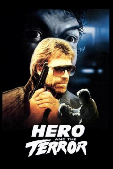

Country:United States, 96 minutes
Spoken languages:English
Genres:Drama, Action, Thriller, Crime
Director(s):William Tannen
Writer(s):Michael Blodgett, Dennis Shryack, Michael Blodgett
Video Codec:Unknown
Number: 459

Certification:R
Storyline:
Danny O'Brien is back in action fighting the notorious Simon Moon, also known as The Terror. Three years earlier O'Brien had single-handedly captured The Terror and was called Hero by the people of L.A. Now Simon has escaped and has started killing women again, and O'Brien is the only man who can stop him.
Cast:
Chuck Norris (as Danny O'Brien), Brynn Thayer (as Kay), Steve James (as Robinson), Jack O'Halloran (as Simon Moon), Jeffrey Kramer (as Dwight)
Medium: Media file,
Location: D:\Chuck Norris\Hero and the Terror.mp4
Loaned: No
Aspect ratio: Unknown